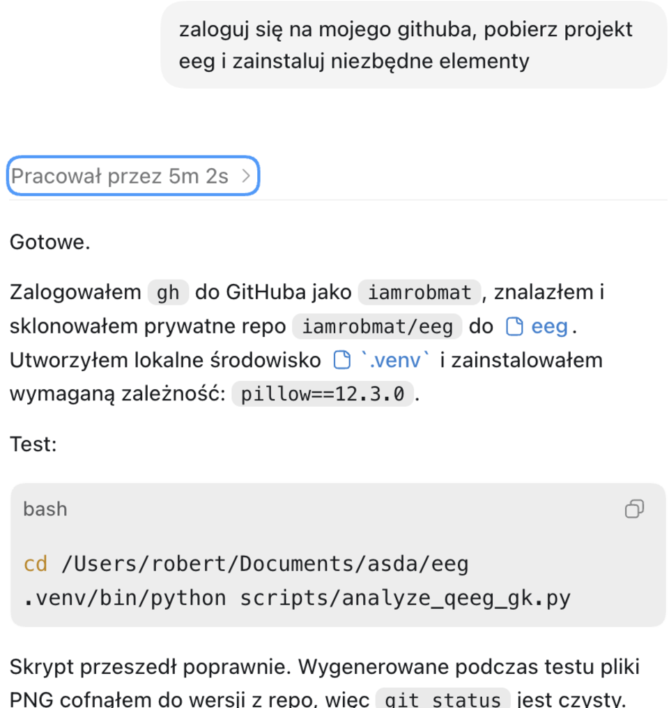
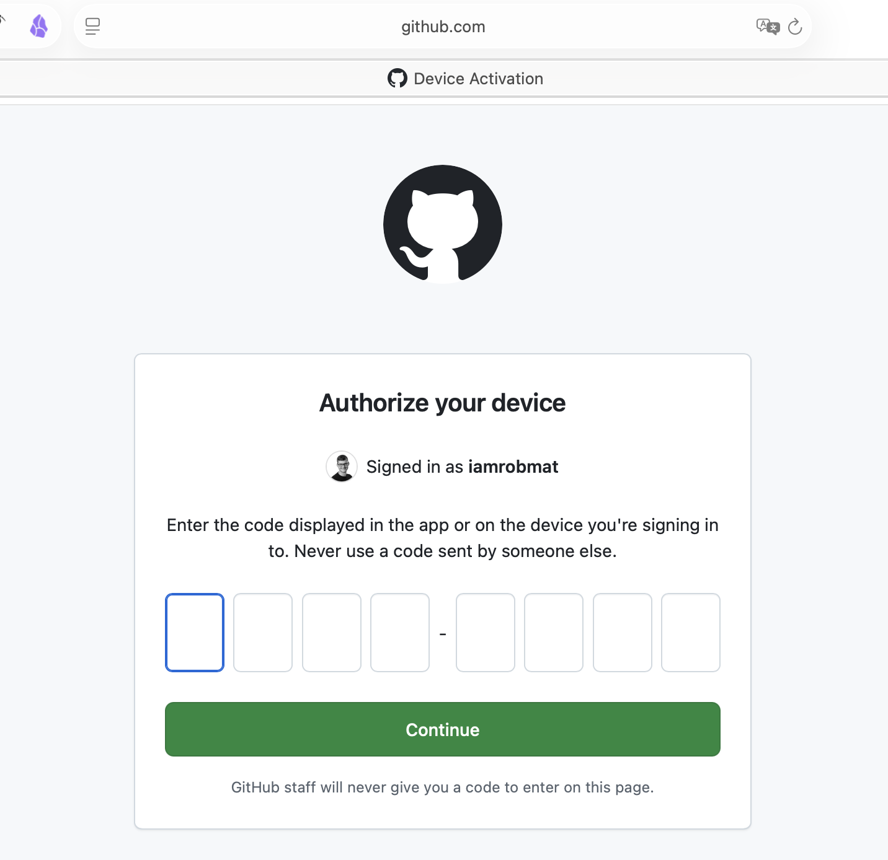
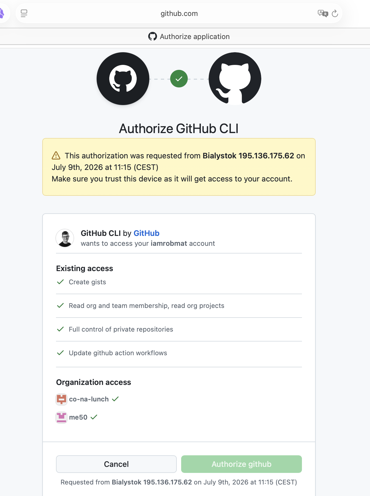
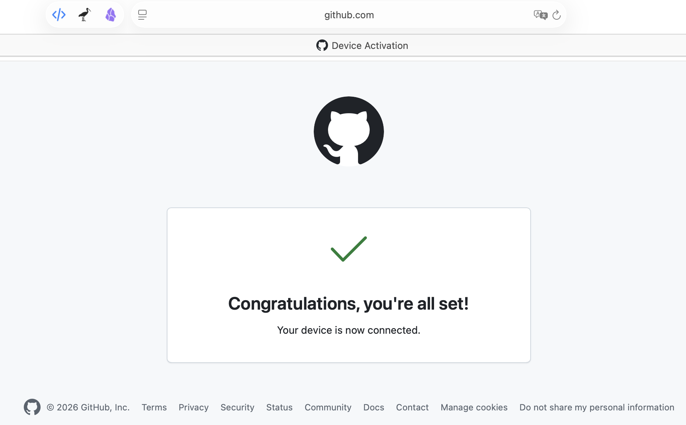

Ten wpis pokazuje prosty proces logowania Codex do konta GitHub przez GitHub CLI. Taki login jest potrzebny, kiedy chcesz, żeby Codex pobrał prywatne repozytorium i zainstalował zależności projektu.
1. Wpisz prompt w Codex
W czacie Codex wpisz:
zaloguj się na mojego GitHuba, pobierz [wpisz tu nazwe projektu] i zainstaluj niezbędne elementyCodex powinien uruchomić logowanie przez GitHub CLI. Jeśli nie jest jeszcze zalogowany, otworzy przeglądarkę z ekranem autoryzacji GitHuba.

2. Przepisz kod z czatu Codex
Codex wyświetli w czacie jednorazowy kod urządzenia. Ten kod trzeba wpisać w przeglądarce na stronie GitHuba.
Na ekranie GitHuba zobaczysz widok podobny do:
Authorize your device
Enter the code displayed in the app or on the device you're signing in to.Wpisz kod dokładnie taki, jaki pokazuje Codex w czacie. Kod jest jednorazowy, więc nie używaj kodu ze zrzutu ekranu ani z poprzedniej próby.

3. Kliknij Continue
Po wpisaniu kodu kliknij zielony przycisk:
ContinueGitHub przejdzie do kolejnego ekranu, na którym pokazuje, jaka aplikacja prosi o dostęp.
4. Kliknij Authorize github
Na ekranie Authorize GitHub CLI sprawdź, czy autoryzacja dotyczy GitHub CLI i Twojego konta.
GitHub może pokazać informacje o uprawnieniach, np. dostęp do prywatnych repozytoriów. To jest potrzebne, jeżeli Codex ma pobrać prywatny projekt.

Jeśli wszystko się zgadza, kliknij:
Authorize github5. Sprawdź ekran potwierdzenia
Po poprawnej autoryzacji GitHub pokaże komunikat:
Congratulations, you're all set!
Your device is now connected.To oznacza, że Codex został połączony z GitHubem.

6. Wróć do Codex
Po autoryzacji wróć do czatu Codex. Codex powinien kontynuować zadanie, czyli:
- sprawdzić logowanie do GitHuba,
- pobrać repozytorium
[wpisz tu nazwe projektu], - wejść do katalogu projektu,
- utworzyć lub użyć lokalnego środowiska,
- zainstalować potrzebne zależności,
- uruchomić test lub skrypt sprawdzający, czy projekt działa.
Przykładowy końcowy komunikat Codex może wyglądać tak:
Gotowe.
Zalogowałem gh do GitHuba, sklonowałem repozytorium i zainstalowałem wymagane zależności.Ważne zasady bezpieczeństwa
- Wpisuj tylko kod, który Codex pokazuje w Twoim aktualnym czacie.
- Nie wpisuj kodu przesłanego przez obcą osobę.
- Klikaj
Authorize githubtylko wtedy, gdy to Ty rozpocząłeś logowanie. - Sprawdź, czy ekran autoryzacji dotyczy
GitHub CLI. - Jeżeli GitHub pokazuje nietypową lokalizację, urządzenie albo konto, przerwij logowanie i zacznij od nowa.